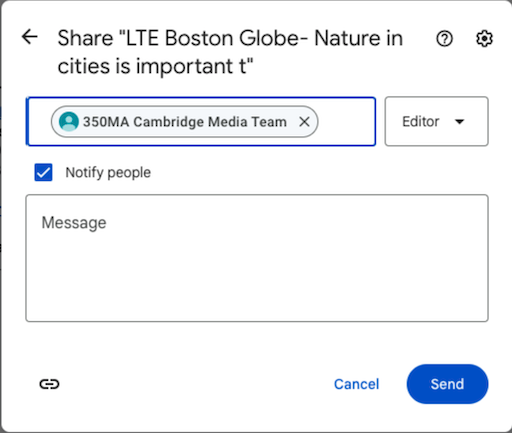

The primary goal of the Letters-to-the-Editor Team is to generate responses to news and opinion pieces that appear in the local press. Responses are in the form of collaboratively written letters to the editor (LTEs). We want to respond to press items that are related to climate change, energy policy, and environmental justice, for the purpose of amplifying the public's knowledge and awareness of our issues.
Here's how it works in a nutshell:
This page may give the appearance that there's a lot to learn, but that's not really the case. Everything that follows is very straightforward, and help is always available if you hit a roadblock.
Membership on the LTE Team is via a Google group, which is similar to a mailing list. The group’s email address is 350ma-cambridge-media-team@googlegroups.com. The home page for the group is https://groups.google.com/g/350ma-cambridge-media-team. You can find all the messages sent to the group on the home page.
Members of the group will receive the daily email and notifications when members share letters for collaboration. Note that you can adjust your membership in the Google group to receive messages less frequently.
Team members get emails, usually one per day, notifying them of articles, op-eds, and editorials that need responses. The alert may include a brief summary of the linked items and may suggest some talking points that a team member could consider using in their response.
Each row in the blast email will be in this form:
From left to right, the columns are the following:
The button takes you to a page that displays just the text of the article (no pop-ups, paywalls, videos, or ads). It works for most newspapers, but not all. You use this if you can't get to the article by just clicking the link in the second column.
The button takes you to a new Google Doc that serves as a template for your letter. The letter’s metadata, in a standard format, is at the top of the letter. The metadata makes it easier for the team captains to track letters.
The first step to create a draft of your letter is to click on the button next to the article link in a row of the morning blast.
You will then see a page that looks like this:
The first time you land on this page, you'll need to enter your name in the provided box.
Notice that on the lower half of the page, there is a button with the label "Get suggestions". If you like, use this button to generate a letter for the chosen article using artificial intelligence. The output is somewhat unpredictable. It's possible that what the AI generates will be factually incorrect. It may occasionally generate a high-quality letter, but in most cases you will only want to use the AI-generated text as a starting point for your letter.
The button labeled "Copy" on the lower right copies the AI-generated text to the clipboard so that you can paste it elsewhere.
Click the button labeled "Create document" to create the Google Doc that will serve as your draft. The next screen will ask if you want to "make a copy." You do. Click the "Make a Copy" button, and it will open Google Docs.
Creating the draft document takes you to a Google Doc created just for you. You will see a page that looks like this:
You can then simply type (or paste in) the text of your letter below the salutation, "To the editor." Typing in a Google doc is not essentially different than typing an email.
Google Docs has features that make it easy to allow other team members to review your draft and give you some feedback before you send it to the newspaper. Experience has proven that sharing drafts leads to more successful LTEs. It also enables to the team captains to track how many letters are being sent and published.
While viewing your draft Google Doc, you will see a button on the upper right of the screen that says "Share." It looks like this:
or, on small displays, like this:
Clicking the share button opens this dialog window:
When you see this, in the box that says "Add people and groups" enter the address of the LTE Google Group: 350ma-cambridge-media-team@googlegroups.com and the press the return key.
Next you will see this:

Now just do the following to complete the sharing process:
When a user shares a draft document, all other team members will receive an email with a subject line like:
[350MA LTE Team] Document shared with you: "LTE Boston Globe- Nature in cities is important t"
Clicking on the link in the email opens the Google doc for the letter you're reviewing. Once you're there, any changes you make to the draft will be recorded and displayed as changes that the author can either either accept or reject.
Another common practice is to select a section of text in the draft, which will cause this symbol to appear on the right margin:
Click on the upper icon to insert a comment in the margin about the selected text. Click on the lower icon to insert an emoji comment. You can read more about making comments on Google's support page
The author of the draft receives email notification of comments and changes to a draft. The author has final say as to which of the suggested changes are kept and which are rejected.
For example, after sharing your draft, you may see a proposed change like this in the right margin of the draft doc:
If you want to accept the suggested change, click the check mark in the upper right of the comment bubble. If not, click the 'X'. Note that you can also reply to the commenter before accepting or rejecting a change.
Resolve or reject all comments and edits before submitting your letter.
In the header of the draft document, the address that follows the words "Submit to:" tells you where to submit your letter. There
are two cases:
In both cases, you select and copy the body of the letter to the clipboard. Never submit the document header.
For email, use your regular email account, and just paste the body of your letter into a new email. Sign the letter with your first and last name, the full address of where you live, and your phone number. The subject line of the email should reference the article or editorial you're responding to.
When submitting to a web form, just type in all the requested information and paste in the body of your letter from the draft doc.
Here's some rules of thumb for LTEs.
|
Do |
Don’t |
|
Be original. Find an insightful angle that adds to the conversation. (Write a letter you’d enjoy reading.) |
Don’t regurgitate the story you’re responding to. Editors want reactions, not reporting. |
|
Have an opinion. Editors want your viewpoint, and they want you to support your position with facts. |
Don’t recycle points that were already made in the article you’re responding to. Add something the author didn’t mention. |
|
Stay focused. If you have five disparate points to make, write five letters. |
Don’t send the exact same letter to multiple papers. |
|
Be concise. Editors love letters that are succinct. For most papers, 200 or 250 words is the limit. For some, it’s even less than that. |
Don’t preach or scold. Support your arguments with facts, not raw emotion. |
|
Provide context. Include an introductory sentence that tells the editor what article you’re responding to. |
Don’t use ALL CAPS, italics, bold, underline, or emojis. Don’t use exclamation points! |
|
Send a plain text email with no attachments. |
Don’t send the letter as an attachment to an email. |
|
Include your contact information: (real) full name, address, and daytime phone. The editor may call to verify that you sent a letter. |
Don’t use sarcasm unless you are positive it will come across as such -- and even then, only in small amounts. Clever digs, pointed or subtle, are only effective if they are not offensive. |
|
Respond on the same day the target article appears, if possible (less important for weekly papers). That said, letters submitted a day later will also likely get consideration. |
Don’t make ad hominem attacks. Criticizing a piece because it was written by someone with an agenda has limited value. You may have an agenda, too. |
|
Respond to articles in your town’s local paper to maximize chances of publication. |
Don’t use clichés, hyperbole, ¨sky-is-falling¨ alarmism. Don’t sound apocalyptic. |
|
Customize your letter to show that it was written expressly for the target newspaper. |
Don’t get too wonky. Don’t assume the reader is an expert in the issue you’re writing about. |
|
Keep the tone of your letter serious but informal. |
Don’t hit “send” until you’ve proofread your letter carefully. An extra set of eyes helps, too. |
|
Include a call for action (e.g. “Maura Healey must change this policy” or “Urge your legislator to support this bill.”) |
Don’t worry if your letter isn’t published. Every letter you send is a valuable political act. |